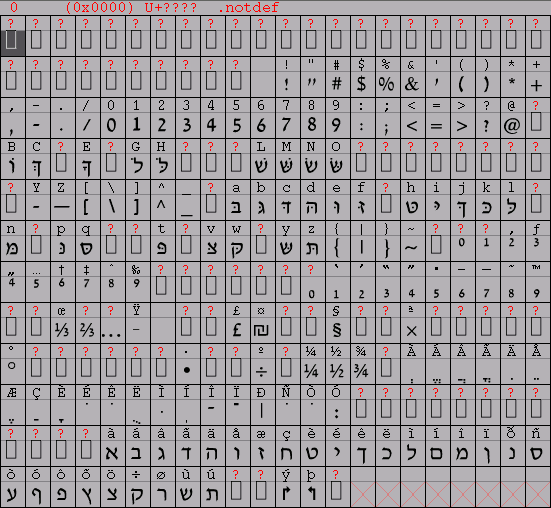
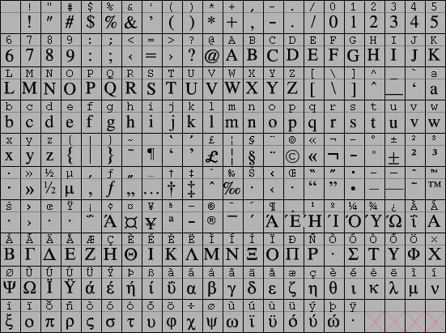
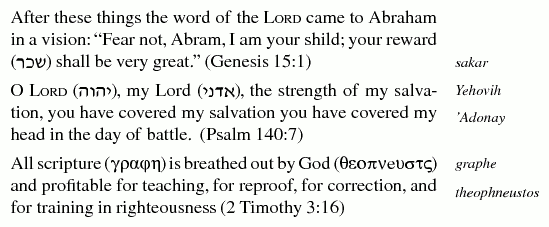
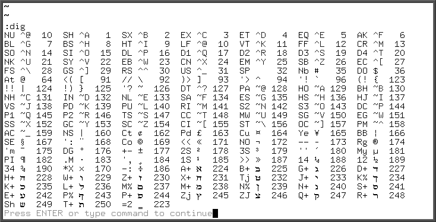
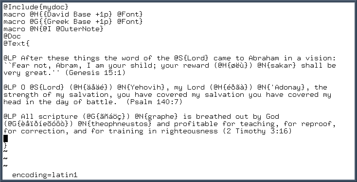

Multiple ISO-8859 Encodings in Lout
Before you start, keep in mind the following:
- X11, Lout, GhostScript, and PSUtils all look for Type1 fonts in different locations and use unrelated configureation.
- You need the .pfa (font outlines) and .afm (font metrics). FontForge can save the metrics file when you generate the fonts.
- The 8-bit encodings are intended only for modern dialects, and do not have native support for combined characters, ancient accents and other notations.
- If you want to distribute a postscript document with new fonts, every page must have them embedded with includeres.
- Don't use @Font adjustments in the body of the document directly, wrap it with a macro so it can be easily tweaked and read.
Latin, Greek and Hebrew
Most fonts distributed today are Unicode fonts. Lout only uses 8-bit character sets, but it is still possible to include languages that use multiple encodings in the same source.
Efraim Yawitz posted some macros and the David font that are very useful for this, including new macros @RLFill and LRFill. Put these macros in a file called mydefs in your working directory and it will work fine for simple functions. There are a lot of extra glyphs in the David typeface that exclude the Latin character set, so use care if you choose to use them in Lout--you are essentially creating an ad-hoc encoding. In these examples I don't use right-to-left editing, I typed them in display order.

The simplified Greek font that I use are the Type 1 scalable Greek (ISO 8859-7) distributed by Red Hat. Lout and GhostScript will die when using fonts that aren't encoded in a specific way, so use FontForge to re-encode them with the specific ISO-8859- character set.

Building and Previewing
Makefiles make managing compiled source much easier, and text processing is no exception. Start by defining some paths specific to your system:
GS_FONTS=/usr/local/share/ghostscript/fonts PS_UTILS=/usr/local/share/psutils WD=`pwd`
Make sure Lout knows that there are fonts in the current directory with -F so it doesn't complain.
all: mixed-8859.ps lout -F ${WD} mixed-8859 > mixed-8859.ps pre: mixed-8859.ps gv mixed-8859.ps mixed-8859.ps: lout -F ${WD} mixed-8859 > mixed-8859.ps
Before you can distribute a document with unusual fonts you must embed them with the utility includeres. This makes the file size huge, but as Valeriy E. Ushakov explains, page independence dictates that each page is not dependent on definitions in previous pages.
Instead of copying the fonts to multiple places, I use a symbolic link from GhostScript's font directory to PSUtils.
install: cp davidy.afm davidy.pfa ${GS_FONTS} ln -fs ${GS_FONTS}/davidy.pfa ${PS_UTILS}/David cp grktimp.afm grktimp.pfa ${GS_FONTS} ln -fs ${GS_FONTS}/grktimp.pfa ${PS_UTILS}/Greek-TimesPlain uninstall: rm ${PS_UTILS}/David rm ${GS_FONTS}/davidy.pfa ${GS_FONTS}/davidy.afm rm ${PS_UTILS}/Greek-TimesPlain rm ${GS_FONTS}/grktimp.pfa ${GS_FONTS}/grktimp.afm final: includeres mixed-8859.ps > output.ps
And make sure to clean up anything you don't want.
clean: rm -f mixed-8859.ps *.li *.ldx *.lix mixed-8859.ld output.ps XftCache fonts.*
Finally, create a file called Fontmap and put in the definitions for which gs and related utilities can read to find out what a font name means.
/DaviD (davidy.pfa); /Greek-TimesPlain (grktimp.pfa);
Telling Lout about New Fonts
Instead of putting font definitions in mydefs, I create a new library with the Lout FontDef statements in it called custom.fd.ld:
{@FontDef @Tag {David-Base} @Face {Base} @Family {David} @Name {David} @Metrics {davidy.afm} @Mapping {Latin1.LCM} } {@FontDef @Tag {Greek-Base} @Face {Base} @Family {Greek} @Name {Greek-TimesPlain} @Metrics {grktimp.afm} @Mapping {Latin1.LCM} }
Notice how these parameters match the labels in the font metrics files:
$ grep Name *.afm davidy.afm:FontName David davidy.afm:FullName David davidy.afm:FamilyName David grktimp.afm:FontName Greek-TimesPlain grktimp.afm:FullName Greek Times Plain grktimp.afm:FamilyName Greek Times
Now at the end of mydoc (or whatever your custom document parameter file is), included a reference to it:
@Database @FontDef { custom.fd }
A few basic macros make the interjection of these new languages very smooth. Here I used @H and @G to change fonts, and @N to put in margin notes.
@Include{mydoc} macro @H{{David Base +1p} @Font} macro @G{{Greek Base +1p} @Font} macro @N{@I @OuterNote} @Doc @Text{ }
The output presented in gv is very sharp. This screen-shot is of X.org 7.2 with hintingstyle set to hintfull in ~/.fonts.conf.

Encodings in VIM
Sometimes it's helpful to set up some shortcuts for changing encoding.
map _u :set encoding=utf-8 map _1 :set encoding=iso-8859-1 map _7 :set encoding=iso-8859-7 map _8 :set encoding=iso-8859-8
Once you have the right terminal emulation and encoding use the :digraphs command to see the available characters and the keystrokes for producing them. Ctrl+K will enable you to type any one of these sequences without a special keyboard map.

Changing Terminal Fonts
The easiest way to switch fonts is with mlterm, then define some keyboard shortcuts in .mlterm/key.
Control+F1="proto:encoding=iso8859-1" Control+F7="proto:encoding=iso8859-7" Control+F8="proto:encoding=iso8859-8" Control+F12="proto:encoding=utf-8"
Setting the encoding in VIM gives easy access to the digigraph table, but the current font will determine how the characters look. mlterm will default to Latin1.
